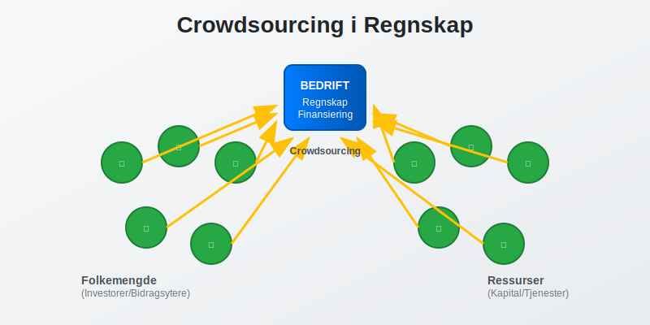
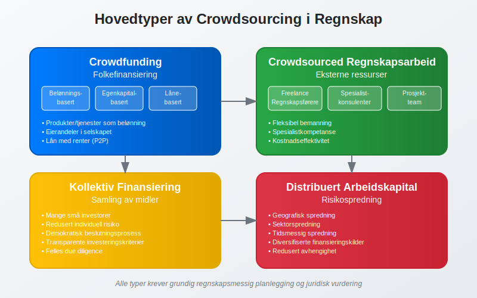
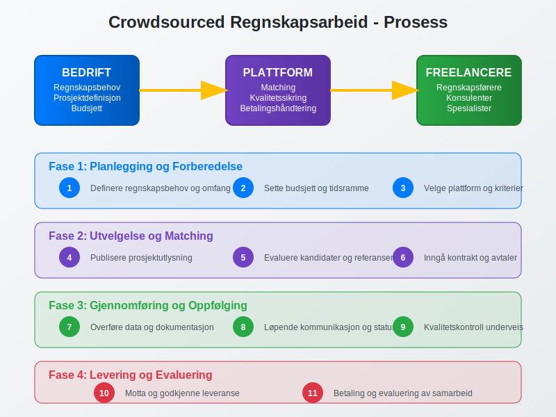
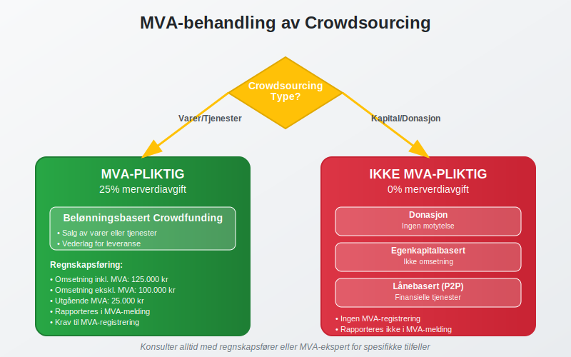
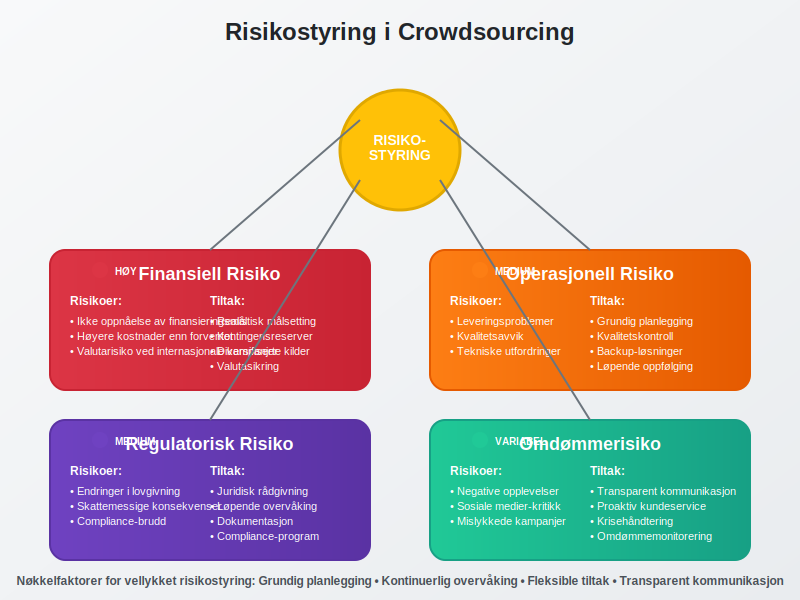

Crowdsourcing i regnskapssammenheng refererer til hvordan bedrifter kan bruke folkefinansiering og eksterne ressurser for å finansiere prosjekter og operasjoner. Dette konseptet har revolusjonert måten selskaper skaffer arbeidskapital og finansierer sine aktiviteter på.

Hva er Crowdsourcing?
Crowdsourcing kombinerer ordene “crowd” (folkemengde) og “sourcing” (innhenting), og beskriver prosessen med å samle ressurser fra en stor gruppe mennesker, vanligvis via internett. I regnskapssammenheng omfatter dette:
- Crowdfunding - folkefinansiering av prosjekter og bedrifter
- Crowdsourced regnskapsarbeid - bruk av eksterne regnskapsførere og konsulenter
- Kollektiv finansiering - samling av midler fra mange små investorer
- Distribuert arbeidskapital - spredning av finansieringsrisiko
Hovedtyper av Crowdsourcing i Regnskap

Crowdfunding og Regnskapsføring
Crowdfunding er den mest kjente formen for crowdsourcing i finansiell sammenheng. Det finnes flere modeller som påvirker regnskapsføringen forskjellig:
Belønningsbasert Crowdfunding
Ved belønningsbasert crowdfunding mottar bidragsytere produkter eller tjenester i stedet for finansiell avkastning.
Regnskapsføring:
- Innsamlede midler regnskapsføres som forskuddsbetaling fra kunder
- Inntektsføring skjer når produktet leveres eller tjenesten utføres
- Bilagsføring må dokumentere alle transaksjoner
| Fase | Regnskapspost | Debet | Kredit |
|---|---|---|---|
| Innsamling | Bank | 100.000 | |
| Forskudd fra kunder | 100.000 | ||
| Levering | Forskudd fra kunder | 100.000 | |
| Salgsinntekt | 100.000 |
Egenkapitalbasert Crowdfunding
Egenkapitalbasert crowdfunding innebærer at investorer får eierandeler i selskapet.
Regnskapsføring:
- Økning i aksjekapital eller egenkapital
- Må følge aksjeloven sine bestemmelser
- Registrering i aksjonærregisteret
Lånebasert Crowdfunding (Peer-to-Peer)
Ved lånebasert crowdfunding låner bedriften penger fra mange små långivere. Dette er også kjent som crowdlending eller peer-to-peer utlån.
Regnskapsføring:
- Regnskapsføres som langsiktig gjeld eller kortsiktig gjeld
- Rentekostnader må periodiseres korrekt
- Krav til dokumentasjon og attestering
Crowdsourced Regnskapsarbeid
Crowdsourced regnskapsarbeid innebærer å bruke eksterne regnskapsførere og konsulenter på prosjektbasis.

Fordeler med Crowdsourced Regnskap
- Kostnadseffektivitet - lavere faste kostnader
- Fleksibilitet - skalering etter behov
- Spesialistkompetanse - tilgang til eksperter
- Redusert administrativt arbeid - mindre personaladministrasjon
Utfordringer og Risikoer
- Kvalitetskontroll - sikring av korrekt bokføring
- Datasikkerhet - beskyttelse av sensitive bilag
- Kontinuitet - sikring av konsistent regnskapsføring
- Compliance - overholdelse av bokføringsloven
Regnskapsføring av Crowdsourcing-kostnader
Plattformkostnader
Crowdsourcing-plattformer tar vanligvis en prosentandel av innsamlede midler:
Eksempel: Crowdfunding-kampanje
Innsamlet beløp: 500.000 kr
Plattformgebyr (5%): 25.000 kr
Netto mottatt: 475.000 kr
Regnskapsføring:
- Plattformgebyret regnskapsføres som markedsføringskostnad eller finanskostnad
- Må dokumenteres med faktura fra plattformen
Belønninger og Incentiver
Kostnader til belønninger for bidragsytere:
| Type belønning | Regnskapsføring | Konto |
|---|---|---|
| Produkter | Varekostnad | 3000-3999 |
| Tjenester | Tjenestekostnad | 4000-4999 |
| Markedsføringsmateriell | Markedsføringskostnad | 6100-6199 |
| Frakt og levering | Distribusjonskostnad | 6300-6399 |
Skattemessige Konsekvenser
Inntektsskatt
Crowdfunding-inntekter kan ha ulike skattemessige konsekvenser:
- Belønningsbasert: Skattepliktig som ordinær omsetning
- Donasjon: Kan være skattefri under visse betingelser
- Egenkapital: Ikke skattepliktig inntekt for selskapet
- Lån: Ikke skattepliktig, men rentekostnader er fradragsberettiget (se crowdlending for detaljert informasjon)
Merverdiavgift (MVA)

MVA-plikt avhenger av crowdsourcing-typen:
| Type | MVA-pliktig | Begrunnelse |
|---|---|---|
| Belønningsbasert | Ja | Salg av varer/tjenester |
| Donasjon | Nei | Ikke vederlag |
| Egenkapital | Nei | Ikke omsetning |
| Lån | Nei | Finansielle tjenester |
Juridiske Aspekter
Regulatoriske Krav
Crowdsourcing må følge relevante lover og forskrifter:
- Bokføringsloven - krav til dokumentasjon og regnskapsføring
- Verdipapirlovgivning - ved egenkapitalbasert crowdfunding
- Forbrukerkjøpsloven - ved salg til forbrukere
- Personvernlovgivning - håndtering av persondata
Kontraktuelle Forhold
Viktige kontraktuelle elementer:
- Tydelige vilkår for crowdsourcing-kampanjer
- Leveringsfrister og forpliktelser
- Refusjonsregler ved manglende oppnåelse av mål
- Immaterielle rettigheter og eierskap
Beste Praksis for Crowdsourcing
Planlegging og Forberedelse
- Grundig budsjettering av prosjektet
- Realistiske mål og tidsfrister
- Klar kommunikasjonsstrategi overfor bidragsytere
- Juridisk gjennomgang av vilkår og betingelser
Regnskapsmessig Oppfølging
- Løpende registrering av alle transaksjoner
- Månedlig avstemming av crowdsourcing-kontoer
- Dokumentasjon av alle kostnader og inntekter
- Rapportering til interessenter og myndigheter
Risikostyring

Identifisering av risikoer:
- Finansiell risiko - ikke oppnåelse av finansieringsmål
- Operasjonell risiko - leveringsproblemer
- Regulatorisk risiko - endringer i lovgivning
- Omdømmerisiko - negative opplevelser for bidragsytere
Fremtidige Trender
Teknologisk Utvikling
Nye teknologier påvirker crowdsourcing:
- Blockchain - økt transparens og sikkerhet
- Kunstig intelligens - automatisert matching og vurdering
- Mobile plattformer - enklere tilgang og deltakelse
- Integrerte regnskapssystemer - automatisk regnskapsføring
Regulatorisk Utvikling
Forventede endringer:
- Strengere krav til investor-beskyttelse
- Økt fokus på transparens og rapportering
- Harmonisering av internasjonale regler
- Nye krav til digitale plattformer
Konklusjon
Crowdsourcing representerer en viktig finansieringsform som krever grundig forståelse av regnskapsmessige og juridiske aspekter. Bedrifter som vurderer crowdsourcing bør:
- Planlegge grundig og forstå alle implikasjoner
- Sikre korrekt regnskapsføring fra start
- Overholde alle juridiske krav og forskrifter
- Implementere god risikostyring og kontroll
Ved riktig implementering kan crowdsourcing være et kraftfullt verktøy for å skaffe arbeidskapital og realisere forretningsideer, samtidig som det skaper verdi for både bedriften og bidragsyterne.
Viktig: Konsulter alltid med regnskapsførere og juridiske rådgivere før du starter crowdsourcing-aktiviteter for å sikre korrekt håndtering av alle aspekter.